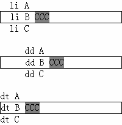

HY1005: IE6 IE7 IE8(Q) 会忽略 LI DD DT 元素的结束标记
标准参考
根据 W3C HTML 4.01 规范中对HTML中的列表元素进行了详细的描述，其中将列表分为三类：
- 无序信息列表，使用 UL 元素创建，列表项由 LI 元素构成；
- 有序信息列表，使用 OL 元素创建，列表项由 LI 元素构成；
- 定义列表，使用 DL 元素创建，通常由一系列的 "项/定义" 对（term/definition pairs）组成，即 DT 元素和 DD 元素。
任何列表必须包含一个或多个列表元素。
关于列表的详细信息，请参考 HTML 4.01 规范 10 Lists 中的内容。
问题描述
IE6 IE7 IE8(Q) 会忽略 LI DD DT 元素的结束标记，并且位于同一个父元素内的 LI 元素在文档树中会前后相连，位于 LI 元素之后的元素1会被修复到其前面最近的 LI DD DT 元素内，成为该 LI DD DT 元素的子元素。
注 1: 所指元素不包括 LI、DD、DT、HTML、HEAD、BODY、TITLE 等。
造成的影响
对 LI DD DT 元素之后出现的非列表元素处理在不同浏览器中导致布局上的差异。
受影响的浏览器
| IE6 IE7 IE8(Q) |
|---|
问题分析
根据 HTML4.01 规范可知，LI DD DT 元素只应存在于其对应的 UL OL DL 元素中，而由 UL OL DL 元素创建的列表从 HTML 规范的定义上说不应该包含具有其他意义的非列表元素 ('display' 不为 'list-item' )，但在实际中，经常会碰到诸如 DIV SPAN 甚至文本内容被放置在 LI 元素之后。
分析以下代码：
<!DOCTYPE html>
<html>
<head>
<style>
* { margin:0; padding:0; }
li { list-style-type:none; }
</style>
</head>
<body>
<div style="width:200px;">
<li>li A</li>
<li style="border:1px solid black;">li B</li>
<span style="background:gray;">CCC</span>
<li>li C</li>
</div>
<br />
<div style="width:200px;">
<dd>dd A</dd>
<dd style="border:1px solid black;">dd B</dd>
<span style="background:gray;">CCC</span>
<dd>dd C</dd>
</div>
<br />
<div style="width:200px;">
<dt>dt A</dt>
<dt style="border:1px solid black;">dt B</dt>
<span style="background:gray;">CCC</span>
<dt>dt C</dt>
</div>
</body>
</html>
一个 SPAN 元素被插在了第二个 LI 元素之后、第三个 LI 元素之前，对于后面的 DD DT 元素也是如此。这段代码在不同的浏览器环境中的表现如下：
| IE6 IE7 IE8(Q) | IE8(S) Firefox Chrome Safari Opera |
|---|---|
|  |  |
在浏览器开发人员工具中查看运行时的源代码：
| IE6 IE7 IE8(Q) |
<div style="width:200px;"> <li>li A <li style="border:1px solid black;">li B<span style="background:gray;">CCC</span> <li>li C</li> </div> |
|---|---|
| IE8(S) Firefox Chrome Safari Opera |
<div style="width:200px;"> <li>li A</li> <li style="border:1px solid black;">li B</li> <span style="background:gray;">CCC</span> <li>li C</li> </div> |
可以看到，LI DD DT 元素之后出现了非列表元素时，浏览器间对代码的修复特性不相同，
- 在 IE6 IE7 IE8(Q)中，SPAN 元素被移动到了其前面最近的 LI 元素内，成为 LI 元素的子元素，所以 SPAN 元素的内容显示在 "List B" 的同一行上，对于 DD DT 元素也是如此；
- 在IE8(S) Firefox Safari Chrome Opera中，浏览器没有对代码结构作任何调整，SPAN 元素依然位于第二个 LI 元素之后、第三个 LI 元素之前，由于 LI 元素为块级元素，所以 SPAN 元素的内容独立显示为一行，对于 DD DT 元素也是如此。
这个现象，与 LI DT DD 元素之后插入的非列表元素类型无关，也与包含 LI DD DT 元素的类型无关。从获取到的浏览器解析后的 HTML 代码可以看出IE6 IE7 IE8(Q) 会忽略 LI DD DT 元素的结束标记，并且位于同一个父元素内的 LI 元素在文档树中会前后相连。
解决方案
虽然 HTML 4.01 规范中没有明确指出列表元素的兄弟元素必须是同一列表元素；但是根据 HTML 语义化理念，建议不要在列表元素 LI DD DT 之后插入其他元素。